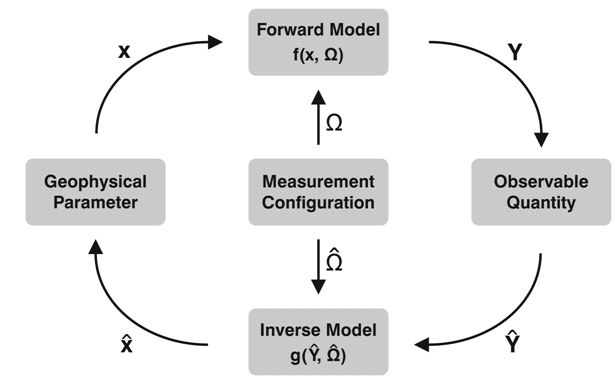

Soil Moisture
Lecture 2: TU Wien Soil Moisture Retrieval

Funded by:


Can soil moisture be observed directly?
Introduction
The state of a geophysical parameter can be retrieved by converting information that is contained...
Forward / Inverse Model
Geophysical Parameter: e.g. soil moisture
Observable Quantity: radiance measured by the antenna
The TU Wien method represents an inverse model.
Forward Model
Models what we would observe (measure) under certain geophysical conditions
Processes involved in the propagation of the radiation from the Earth’s surface to the antenna:
interactions of the waves with illuminated matter such as soil, vegetation canopy or atmospheric particles
$$Y = f(x, \Omega)$$
$Y$...observable quantities (i.e., radiance measured by the antenna)
$x$...geophysical parameters of interest (e.g., temperature or soil moisture)
$\Omega$...set of controllable measurement conditions (e.g., the wavelengths, viewing direction, time, sun position, polarization, ...)
$f(.)$...complex function that relates x to Y (i.e., the formulation of the wave propagation and interaction processes)
Inverse Model
Inversion of the forward model ⇒ retrieval of the parameters of interest from the observables.
We observe certain parameter values (e.g. backscatter) - what are the geophysical conditions that we are actually
interested in (e.g. soil moisture)?
$$\hat{x} = g(\hat{Y}, \hat{\Omega})$$
$\hat{x}$ ...estimates of the geophysical parameters obtained by g(.)
$g(.)$ ...complex function
$\hat{Y}$ ...actual measurements
$\hat{\Omega}$ ...approximations of the measurement conditions
How does this work in practice?
The TU-Wien soil moisture model
Introduction I
developed at the Vienna University of Technology
physically motivated empirical change detection method
no iterative adjustment process needed - direct retrieval from backscatter measurements possible
model parameters calibration requires a multi-year radar backscatter archive ⇒ land cover, surface roughness...
The TU-Wien soil moisture model
Introduction II
Variations of the backscatter coefficient $\sigma^0$ are related to...
- surface roughness
- changes in vegetation
- variations in the soil water content
Datatsets: European C-Band Scatterometers ESCAT and ASCAT (multi-incidence angle and multi-beam viewing capability)
Physical assumptions and empirically observed evidences I
- Incidence angle $\theta$: strong impact on the backscatter coefficient $\sigma^0$
- characteristic for roughness and vegetation
- soil moisture changes are not/only minimally affected
- Coarse resolution of the scatterometer (~ tenths of kilometres, see ASCAT Dataviewer screenshot showing
Austria and surrounding area)
⇒ roughness and land cover can be assumed temporally invariant
Physical assumptions and empirically observed evidences II
- $\sigma^0$ decreases/increases with vegetation change (more vegetation ⇒ higher $\sigma^0$)
⇒ the $\sigma^0$ time series changes in accordance to the vegetation phenology over time - Vegetation phenology cycle: seasonal scale
⇒ local short-term variability is negligible due to low resolution of the sensor - The relationship between soil moisture and $\sigma^0$ - expressed in [dB] - is linear
Physical assumptions and empirically observed evidences III
- Incidence angle at which $\sigma^0$ is rather stable in face of vegetation changes: "crossover angles"
- $\theta_{dry}$: ~ 25°
- $\theta_{wet}$: ~ 40°
processing steps
- Normalisation of ESCAT backscatter measurements
- Azimuth angle normalisation
- Incidence angle normalisation
Vegetation correction
Soil moisture estimation
Soil moisture uncertainty estimation
...each of these steps is described in a respective lecture!